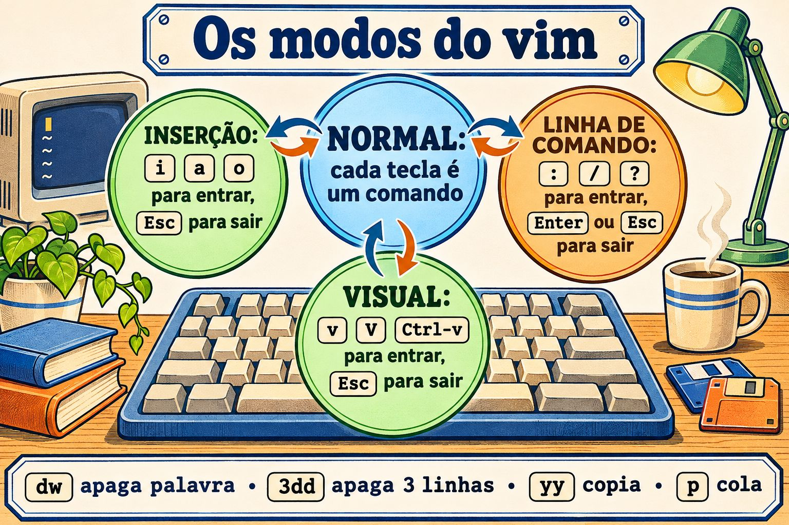
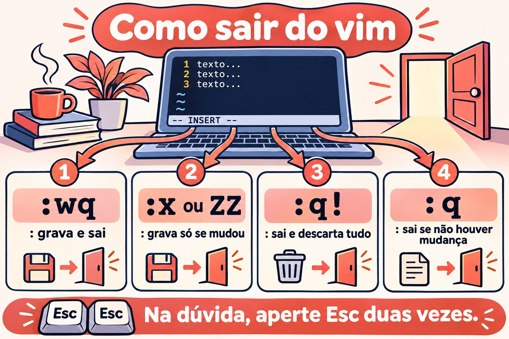

Aula 3.5 · vi e vim de verdade
Nas Aulas 3.3 e 3.4 você mudou arquivos com comandos: o grep escolheu linhas, o sed trocou, o awk calculou. Hoje você muda arquivos com as mãos, no editor que existe em todo Linux, inclusive no servidor recém-instalado, no contêiner sem pacotes e no modo de emergência, quando o disco não montou e não há rede. Esse editor é o vi, e quase sempre ele é o vim, em alguma versão. Você não precisa gostar dele. Precisa entrar, mudar o que tem de mudar, sair sem estragar nada e saber o que fazer quando a sessão cai no meio. O resto é velocidade, e a velocidade vem da mesma regex das últimas duas aulas.
| Ficha | Aula 3.5 |
|---|---|
| Módulo | M3 · Texto e editor, aula 5 de 5 |
| Quando | Semana 8 |
| Ao final você consegue | Abrir, salvar e sair do vi sem perder nada, com :w, :q!, :wq, :x e ZZ; trocar entre os modos normal, inserção, linha de comando e visual sem se perder; andar por palavra, linha e número de linha sem setas; apagar, copiar, colar, desfazer e repetir com operador, movimento, contagem e o .; buscar com / e ? e trocar com :s e :%s, com grupos, & e outro delimitador; apagar e filtrar linhas com :g, :v e :%!; ver tabulações, espaços e o ^M do Windows com :set list e :set ff; recuperar uma edição perdida pelo arquivo .swp; editar arquivos do sistema com sudoedit e visudo, sem sudo vim; saber qual vi cada distribuição instala e por que o da Debian às vezes "não desfaz" |
| Pré-requisitos | Aula 2.3 (journal e logs); Aula 3.3 (BRE e ERE, classes como [[:space:]]); Aula 3.4 (s///, grupos, &, ~/lab34 com o conf.amostra e o acesso.log) |
| Tempo | Cerca de 2h30 |
| Snapshots | m3a5-inicio e m3a5-fim nas duas VMs |
1 · Aquecimento
Três perguntas, de cabeça. Escreva as respostas; o Gabarito confere no fim.
- Você abre um arquivo no
vie digitaPort 2222logo de cara. Na tela aparecem coisas que você não digitou, e o cursor pulou para outro lugar. Palpite: o que aconteceu? - Você abre um arquivo e o
vimmostraE325: ATTENTIONe fala de um arquivo.swp. Palpite: o que isso quer dizer, e é perigoso só apertar Enter? - O cursor está na linha 1 do
conf.amostra, e você digita:s/yes/no/. Palpite: a linha 7,PasswordAuthentication yes, muda?
2 · Por que importa
O vi raramente estraga um arquivo sozinho. Quem estraga é a pressa de sair dele:
| O chamado | A resposta errada | O que ela causa |
|---|---|---|
"O servidor caiu no modo de emergência por causa do /etc/fstab" | Procurar o nano | No modo de emergência da Rocky, e em muita imagem mínima, só existe o vi. Quem não sabe usá-lo reinstala o servidor, ou espera alguém que saiba |
"Coloca o usuário operador no sudoers" | sudo vi /etc/sudoers e salvar | Um erro de digitação passa direto, porque o vi não confere nada. O sudo reclama na próxima vez, e às vezes para de funcionar para todo mundo. O visudo confere antes de gravar |
"Não consigo sair do vi, vou fechar o terminal" | Fechar a janela ou matar o processo | A mudança se perde, e fica para trás um .arquivo.swp. O próximo que abrir o arquivo, talvez você amanhã, recebe um E325 e não sabe o que responder |
"Troca todos os yes por no no arquivo" | :s/yes/no/ | Troca só na linha do cursor, e só a primeira ocorrência. O % e o g fazem a diferença, como no sed |
| "Edita o arquivo do root, sem tirar a permissão dele" | sudo vim /etc/algo.conf, ou chmod 666 para conseguir salvar | O sudo vim roda o editor inteiro como root, com os seus plugins e o :! abrindo um shell de root. O chmod deixa o arquivo aberto para qualquer usuário. O sudoedit edita uma cópia com o seu usuário e grava de volta como root |
| "O script veio do colega que usa Windows e não roda" | Reescrever o script | O arquivo tem \r\n no fim de cada linha. O vim mostra [dos] ao abrir, e um :set ff=unix resolve em dois segundos |
O vi é estranho por um motivo só: as letras são comandos, a não ser que você diga que vai escrever texto. Entendido isso, o resto é vocabulário.
3 · Modelo mental
O
vitem modos. No modo normal, que é onde você entra, cada tecla é um comando:xapaga,dcomeça um "apagar",wanda uma palavra. Para escrever texto, você entra no modo de inserção (comi,aouo) e sai dele comEsc. Os comandos com:,/e?abrem uma linha de comando no rodapé, que roda quando você aperta Enter. Na dúvida, aperteEscduas vezes: você volta ao modo normal, de onde tudo começa.
i a o I A O
┌──────────────────────►┌───────────────┐
│ │ INSERÇÃO │ as teclas viram texto
vim arquivo ─►┌───┴─────────┐◄────────────┤ -- INSERT -- │
│ NORMAL │ Esc └───────────────┘
│ teclas são │
│ comandos │ : / ? ┌───────────────┐
│ ├────────────►│ LINHA DE │ :wq :%s/a/b/g /regex
│ │◄────────────┤ COMANDO │ roda com Enter
└───┬─────────┘ Enter ou Esc└───────────────┘
│ ▲
v V ^v │ │ Esc, ou um operador (d y c > <)
▼ │
┌──────┴────────┐
│ VISUAL │ seleciona caracteres (v), linhas (V) ou um bloco (Ctrl-v)
└───────────────┘
A gramática do modo normal: [contagem] operador [contagem] movimento
d w apaga até a próxima palavra
c $ troca até o fim da linha
3 d d apaga 3 linhas (operador repetido = a linha inteira)
y G copia daqui até a última linha
. repete a última mudança, onde o cursor estiverDuas consequências práticas. Primeira: um comando no modo normal é uma frase, verbo e objeto. Você não decora dw, dd, d$, cw, c$, yy, y$ como quatorze atalhos; decora três verbos (d, c, y) e alguns movimentos, e combina. Segunda: o . repete a frase inteira. Uma troca que dá certo uma vez vira n e ., n e ., quantas vezes você quiser, conferindo cada uma.


4 · Conceito em camadas
Essencial
Abrir e sair. Tudo começa e termina no modo normal. Se não sabe onde está, Esc.
| Você digita | Faz |
|---|---|
vim arq | Abre o arquivo. Se não existe, abre vazio e cria ao salvar |
vim +7 arq | Abre na linha 7 |
vim +/Password arq | Abre na primeira linha que casa com a regex |
view arq ou vim -R arq | Abre só para leitura. É o jeito de olhar um arquivo de produção sem medo |
:w | Grava e continua no arquivo |
:q | Sai, se não houver mudança por gravar. Se houver, recusa com E37 |
:q! | Sai e descarta as mudanças |
:wq | Grava e sai. Grava mesmo sem mudança, e a data do arquivo muda |
:x ou ZZ | Grava só se houver mudança, e sai |
ZQ | O mesmo que :q! |
:w novo.conf | Grava uma cópia com outro nome; o buffer continua ligado ao original |
:e! | Volta ao arquivo como está no disco, jogando fora o que você mudou desde o último :w |
Entrar no modo de inserção. A letra escolhe onde o texto entra:
| Tecla | Onde |
|---|---|
i | Antes do cursor |
a | Depois do cursor |
I | No começo da linha, depois dos espaços |
A | No fim da linha |
o | Numa linha nova, abaixo |
O | Numa linha nova, acima |
Andar. Sem setas, que podem não funcionar num terminal ruim, e com contagem, que as setas não têm:
| Tecla | Vai para |
|---|---|
h j k l | Esquerda, baixo, cima, direita |
w b e | Começo da próxima palavra, começo desta ou da anterior, fim da palavra |
0 ^ $ | Começo da linha, primeiro caractere que não é espaço, fim da linha |
gg G | Primeira linha, última linha |
7G ou :7 | Linha 7 |
Ctrl-f Ctrl-b | Uma tela para a frente, uma para trás |
% | O parêntese, colchete ou chave que fecha (ou abre) o que está sob o cursor |
Apagar, copiar, colar, desfazer.
| Tecla | Faz |
|---|---|
x | Apaga o caractere sob o cursor |
r seguido de uma tecla | Troca o caractere sob o cursor por essa tecla, e continua no modo normal |
dd | Apaga a linha. 3dd apaga três |
dw, d$ ou D | Apaga até a próxima palavra, até o fim da linha |
cw, c$ ou C | Apaga e entra no modo de inserção: é "trocar" |
yy | Copia a linha (o y vem de yank). 5yy copia cinco |
p P | Cola depois, antes. Uma linha copiada é colada abaixo ou acima |
u | Desfaz |
Ctrl-r | Refaz |
. | Repete a última mudança |
J | Junta a linha de baixo a esta |
O dd não só apaga: ele guarda a linha. Por isso ddp troca a linha atual com a de baixo, e dd, andar, p é o "recortar e colar" do vi.
Buscar.
| Tecla | Faz |
|---|---|
/regex | Busca para a frente, a partir do cursor |
?regex | Busca para trás |
n N | Próxima ocorrência, na mesma direção ou na contrária |
* # | Busca a palavra sob o cursor, para a frente ou para trás |
A busca usa regex, a mesma das aulas anteriores, com o sabor do vim, que você vê no Intermediário.
Intermediário
Operador e movimento. Qualquer operador combina com qualquer movimento:
| Frase | Faz |
|---|---|
dw | Apaga até o começo da próxima palavra |
d$ | Apaga até o fim da linha |
dG | Apaga daqui até o fim do arquivo |
dgg | Apaga daqui até o começo |
d/Port | Apaga daqui até a próxima linha com Port, sem ela |
c0 | Troca do começo da linha até o cursor |
yG | Copia daqui até o fim |
>> e << | Aumenta e diminui o recuo da linha; >G até o fim |
gUw e guw | Põe a palavra em maiúsculas, em minúsculas |
Uma "palavra" para o w é uma sequência de letras, números e _, ou uma sequência de outros símbolos. Por isso dw sobre #PermitRootLogin apaga só o #: o # é uma palavra, e PermitRootLogin é outra. O W maiúsculo usa só os espaços como separador, e dW apagaria #PermitRootLogin inteiro.
Trocar com :s. É o s/// do sed, dentro do editor. Sem intervalo, age na linha do cursor:
| Comando | Age em |
|---|---|
:s/yes/no/ | Primeira ocorrência na linha do cursor |
:s/yes/no/g | Todas na linha do cursor |
:%s/yes/no/g | Todas, no arquivo inteiro. O % é "da primeira à última linha" |
:5,10s/^/#/ | Da linha 5 à 10: comenta as seis |
:.,$s/a/b/ | Da linha do cursor (.) até o fim ($) |
:'<,'>s/a/b/ | Nas linhas selecionadas no modo visual. O vim escreve o '<,'> sozinho quando você aperta : com uma seleção |
:%s/a/b/gc | Todas, perguntando uma por uma: y troca, n pula, a troca todas as que faltam, q para |
:%s/a/b/ge | Todas, sem dar erro se não achar nenhuma. Útil em macro e em script |
Grupos, & e outro delimitador funcionam como no sed: :%s/^\(PasswordAuthentication\) yes$/\1 no/, :%s/^MaxAuthTries/# &/, :%s#/login#/entrar#g.
A regex do vim. Por padrão, o vim trabalha como a BRE do sed e do grep sem -E: o +, o ?, o |, as chaves e os parênteses são literais, a não ser com barra. E tem atalhos próprios:
No vim | Quer dizer | Na ERE do grep -E |
|---|---|---|
\+ \? \= | Um ou mais, zero ou um, zero ou um | + ? ? |
\{2,4} | De duas a quatro vezes | {2,4} |
\( \) \| | Grupo e alternativa | ( ) | |
\s \S | Espaço ou tabulação, e o contrário | [[:space:]], [^[:space:]] |
\d \w | Dígito, caractere de palavra | [0-9], [[:alnum:]_] |
\< \> | Começo e fim de palavra | \b |
\v no começo | Very magic: dali em diante, + ? | ( ) { } sem barra, como na ERE | |
\c em qualquer lugar | Ignora maiúsculas nesta busca | grep -i |
Assim, :%s/[0-9]+/N/g procura "um dígito seguido de um +", e não acha nada no acesso.log. O que você queria é :%s/[0-9]\+/N/g, ou :%s/\v[0-9]+/N/g.
Apagar e filtrar linhas com :g e :v. O :g/regex/comando roda o comando em toda linha que casa; o :v, em toda que não casa. Os dois mais usados:
:g/^\s*#/d apaga os comentários, com ou sem recuo (o sed '/^[[:space:]]*#/d')
:g/^\s*$/d apaga as linhas vazias ou só com espaços
:v/401/d deixa só as linhas com 401 (o grep 401, dentro do editor)
:g/Failed/p só mostra, sem mudar nada (o p é de print)O vim conversa com o shell.
| Comando | Faz |
|---|---|
:!comando | Roda um comando e volta. :!ls -l % lista o arquivo aberto; o % é o nome dele |
:r arquivo | Insere o conteúdo de outro arquivo abaixo do cursor |
:r !comando | Insere a saída de um comando: :r !ip -br a |
:%!comando | Passa o arquivo inteiro pelo comando e troca pelo resultado: :%!sort -u |
:5,10!sort | O mesmo, só nas linhas 5 a 10 |
:w !comando | Manda o buffer para o comando sem gravar o arquivo: :w !wc -l |
O :%! faz do editor uma bancada de filtros: tudo o que você aprendeu nas Aulas 3.2 a 3.4 roda dentro do vim, com u para desfazer se der errado.
Configurar. Os :set valem até você sair; no ~/.vimrc, valem sempre:
| Opção | Faz |
|---|---|
:set nu e :set nonu | Mostra e esconde o número das linhas |
:set list | Mostra tabulação como ^I e o fim da linha como $, como o cat -A |
:set hlsearch e :noh | Destaca as buscas; o :noh apaga o destaque até a próxima |
:set ignorecase smartcase | Busca sem diferenciar maiúsculas, a não ser que você digite uma |
:set ff? | Mostra o formato das linhas: unix (\n) ou dos (\r\n) |
:set paste | Cola texto sem o vim recuar cada linha sozinho. :set nopaste depois |
:set opção? | Mostra o valor de qualquer opção |
Ponte Windows
| No Windows | No vim | Cuidado |
|---|---|---|
| Ctrl+S | :w | No terminal, Ctrl+S pode congelar a tela (é o controle de fluxo antigo). Se congelou, Ctrl+Q destrava |
| Ctrl+Z (desfazer) | u | No terminal, Ctrl+Z suspende o vim e devolve o shell. Ele não fechou: fg volta para ele. Se você esquecer e sair do SSH, sobra um .swp |
| Ctrl+F (localizar) | /texto | A busca do vim é regex: . casa com qualquer caractere, como na Aula 3.3 |
| Ctrl+H (substituir) no Notepad++ | :%s/de/para/gc | No Notepad++, o modo "Expressão regular" usa \1 como o vim |
| Notepad++ "Editar > Conversão de fim de linha > Unix (LF)" | :set ff=unix e :w | O Notepad antigo salvava sempre em \r\n. O Notepad atual mantém o formato do arquivo, mas um arquivo novo sai em \r\n |
| Abrir o Notepad "como administrador" | sudoedit arq | No Windows o editor inteiro vira administrador. No Linux, o sudoedit deixa o editor com o seu usuário e só a gravação é feita como root |
notepad arq no PowerShell | $EDITOR arq | No Linux, cada programa que abre um editor (crontab -e, visudo, git commit, systemctl edit) olha as variáveis VISUAL e EDITOR |
Avançado
O arquivo de troca (.swp). Enquanto você edita conf.amostra, o vim grava as mudanças, a cada poucos segundos, num arquivo oculto ao lado, o .conf.amostra.swp. Se a sessão cai (SSH que fecha, kill -9, servidor que desliga), as mudanças estão nele. Na próxima vez que alguém abrir o arquivo, o vim mostra o E325: ATTENTION e oferece:
| Opção | Faz | Quando |
|---|---|---|
(O)pen Read-Only | Abre só para leitura | Para olhar antes de decidir |
(E)dit anyway | Abre o arquivo do disco e ignora o .swp | Quase nunca. Se outra pessoa está editando, um sobrescreve o outro |
(R)ecover | Recupera as mudanças do .swp | A sessão caiu e você quer o que tinha feito |
(D)elete it | Apaga o .swp | Você já recuperou, ou sabe que não quer o que está nele. Só aparece se o processo dono não está mais rodando |
(Q)uit e (A)bort | Desiste | Para ir perguntar quem está editando |
Se a mensagem diz process ID: 12345 (STILL RUNNING), outra sessão está com o arquivo aberto agora: é um colega, ou é você em outro terminal. Não edite por cima. Depois de recuperar, o .swp velho continua lá, e o E325 volta na próxima abertura até você apagá-lo. O vim -r, sem arquivo, lista os .swp que ele encontra.
Editar arquivo do sistema: sudoedit, visudo e companhia.
| Arquivo | Use | Por quê |
|---|---|---|
| Qualquer arquivo de configuração | sudoedit arq (o mesmo que sudo -e arq) | Copia o arquivo para um temporário seu, abre o seu editor com o seu ~/.vimrc, e no fim grava de volta como root. Nenhum plugin nem :! roda como root |
/etc/sudoers e /etc/sudoers.d/* | sudo visudo e sudo visudo -f /etc/sudoers.d/arq | Trava o arquivo, edita uma cópia e só grava se a sintaxe estiver certa. Se não estiver, pergunta What now?: e volta a editar, x sai sem gravar, Q grava com o erro (nunca) |
/etc/passwd e /etc/group | sudo vipw e sudo vigr | Travam o arquivo para que um useradd ao mesmo tempo não se perca. vipw -s e vigr -s editam o shadow e o gshadow |
| A tabela do cron | crontab -e | Confere a sintaxe ao sair e recarrega |
| Um serviço do systemd | sudo systemctl edit nome | Cria o arquivo de override no lugar certo e recarrega o systemd (é a Aula 4.x) |
| Conferir sem mudar | sudo visudo -c | Lê o sudoers e todos os incluídos e diz se estão certos. Não abre editor |
Se você já está dentro do vim, mudou um arquivo de root e não pode gravar, existe a saída de emergência: :w !sudo tee % > /dev/null. O :w ! manda o buffer para o sudo tee, que grava o arquivo como root; o > /dev/null esconde a cópia que o tee mostraria. O vim depois avisa que o arquivo mudou fora dele: aperte L para recarregar. Funciona, mas é um remendo. O hábito é abrir com sudoedit desde o começo.
VISUAL, EDITOR e o editor padrão. Os programas procuram nesta ordem: SUDO_EDITOR (só o sudoedit), VISUAL, EDITOR, e por fim um padrão da distribuição. Na Rocky, o padrão é o vi. Na Debian, é o /usr/bin/editor, que o sistema de alternativas aponta para o nano. Para fixar o seu, no ~/.bashrc: export VISUAL=vim EDITOR=vim.
Modo visual e bloco. v seleciona caracteres, V linhas, Ctrl-v um retângulo. Com uma seleção, um operador age nela: d, y, >, : (para um :s só ali). No vim completo, Ctrl-v, descer algumas linhas, I# e Esc comenta todas de uma vez. Nas versões mínimas o bloco pode não ter o I; o :5,10s/^/#/ funciona em qualquer uma.
Registros. Todo d, c e y vai para um registro. O " é o padrão; o "0 guarda a última cópia (y), que um dd depois não apaga; de "a a "z são seus. "ayy copia a linha para o registro a, "ap cola. :reg mostra todos. Isso resolve o problema clássico: você copiou uma linha, apagou outra para dar lugar, e o p colou a apagada. Cole com "0p.
Modelines. Um arquivo pode ter, nas primeiras ou últimas linhas, um comentário como # vim: set ts=4 sw=4:, e o vim aplica as opções ao abrir. Já houve falhas de segurança por esse caminho. Por isso várias distribuições desligam o recurso para o root, e quem edita arquivos de outras pessoas pode pôr set nomodeline no ~/.vimrc.
5 · Rocky × Debian
| Item | rocky-lab (Rocky 9) | debian-lab (Debian 13) | Como conferir |
|---|---|---|---|
O que é o vi | /usr/bin/vi, do pacote vim-minimal | /usr/bin/vi → /etc/alternatives/vi → /usr/bin/vim.tiny, do pacote vim-tiny | readlink -f "$(command -v vi)" |
O vim completo | Pacote vim-enhanced, que nem sempre vem instalado | Pacote vim, que não vem instalado | command -v vim |
| Versão | 8.2 | 9.1 | vi --version | head -2 |
| Depois de instalar o completo | O vi continua sendo o vim-minimal; o pacote costuma trazer um /etc/profile.d/vim.sh com alias vi=vim para usuários comuns, mas não para o root | O vi passa a apontar para o vim.basic, porque ele tem prioridade maior nas alternativas | type vi; update-alternatives --display vi |
Modo compatível com o vi antigo | Não, em uso normal | O vim.tiny lê o /etc/vim/vimrc.tiny, que liga o compatible, a não ser que você tenha um ~/.vimrc | :set compatible? dentro do editor |
Editor padrão (EDITOR vazio) | vi | /usr/bin/editor, que aponta para o nano | update-alternatives --display editor (Debian) |
visudo e sudoedit sem EDITOR | Abrem o vi | Abrem o nano | Rode e veja |
crontab -e na primeira vez | Abre o vi | Pergunta qual editor você quer (select-editor) e grava a escolha em ~/.selected_editor | Rode como um usuário novo |
vimtutor | Vem com o vim-enhanced | Vem com o pacote vim | command -v vimtutor |
syntax on no ~/.vimrc | Erro no vim-minimal | Erro no vim.tiny | Proteja com if has('syntax') |
A linha que mais pega é a do modo compatível. O mesmo vi, na mesma tela, desfaz só uma vez, e as setas no modo de inserção escrevem letras. Não é defeito: é o vim imitando o vi dos anos 1980, de propósito. Na Quebra B você vê isso acontecer, e conserta com uma linha.
A outra é a do editor padrão. Na Debian, o sudo visudo abre o nano, e quem treinou só o vi se perde do outro lado. Saiba sair dos dois: no nano, Ctrl+O grava e Ctrl+X sai.
6 · Lab guiado
Você é o rodrigo, na rocky-lab, e alcança a debian-lab pelo ssh deb. Tudo acontece em ~/lab35, nas duas VMs, sobre cópias. A regra do lab: antes de cada passo, cp conf.orig treino.conf; depois, diff conf.orig treino.conf mostra exatamente o que as suas teclas fizeram. O diff é o seu juiz, não a sua memória. O único arquivo de root é o do Passo 8, criado só para o lab, em /srv/lab35. Nenhum arquivo do sistema é aberto para escrita.


Nos blocos abaixo, as teclas que você aperta dentro do vim aparecem num comentário depois do comando que abre o editor. Esc é a tecla Esc, Enter é a tecla Enter, e o espaço entre as teclas só serve para ler: não aperte a barra de espaço.
Passo 0 · Snapshot, pasta e qual vi você tem
No Proxmox, tire o snapshot m3a5-inicio das duas VMs. Na rocky-lab:
eval "$(ssh-agent -s)"; ssh-add
mkdir -p ~/lab35; ssh deb 'mkdir -p ~/lab35'
cd ~/lab35
cp ~/lab34/conf.amostra conf.orig
cp ~/lab34/acesso.log .
wc -l conf.orig acesso.log
scp conf.orig acesso.log deb:lab35/ 11 conf.orig
15 acesso.log
26 totalSe faltar algum, recrie com o Passo 0 da Aula 3.3. Agora descubra qual vi cada VM tem. Rode o bloco na rocky-lab e, trocando rpm -qf por dpkg -S, na debian-lab:
type vi vim
readlink -f "$(command -v vi)"
rpm -qf "$(readlink -f "$(command -v vi)")"
vi --version | head -2
echo "VISUAL=$VISUAL EDITOR=$EDITOR"Na Rocky você deve ver algo como vi is /usr/bin/vi, o pacote vim-minimal, VIM - Vi IMproved 8.2 e, na segunda linha, uma versão Small ou Huge, conforme o build. Talvez vim nem exista. Na Debian, o readlink termina em /usr/bin/vim.tiny, o dpkg -S diz vim-tiny, a versão é 9.1 e a segunda linha fala em Tiny version. As duas variáveis estão vazias. Na Debian, confira também o editor padrão:
ssh deb 'update-alternatives --display editor | head -3; update-alternatives --display vi | head -3'Agora instale o vim completo nas duas, e confira de novo:
sudo dnf install -y vim-enhanced
ssh -t deb 'sudo apt install -y vim'
bash -lc 'type vi vim'
ssh deb 'readlink -f "$(command -v vi)"; readlink -f /usr/bin/editor'Na Rocky, o vi continua sendo o vim-minimal; num shell de login novo, o type vi pode mostrar vi is aliased to 'vim', que vem do /etc/profile.d/vim.sh. Na Debian, o vi agora termina em /usr/bin/vim.basic, e o editor continua no nano. O vim.tiny não foi embora: ele continua instalado, e a Quebra B usa ele. Anote o que saiu em cada VM.
Passo 1 · Entrar e sair sem estragar
cd ~/lab35
cp conf.orig treino.conf
vim treino.conf # no vim: dd e depois :q EnterVocê apagou a primeira linha e pediu para sair.
Decida 1 · O que o vim faz com o :q?
- A) Sai, e a linha 1 sumiu do arquivo
- B) Recusa, e avisa que há mudança não gravada
- C) Grava a mudança e sai, como o
:wq - D) Pergunta se você quer salvar, como o Bloco de Notas
Escolha a letra antes de olhar a tabela.
# ainda no vim, depois do :q
:q!
cmp conf.orig treino.conf && echo igualE37: No write since last change (add ! to override)
igual| Se você marcou | Resultado | Por quê |
|---|---|---|
| A | ❌ Errada | O :q nunca joga fora uma mudança. Para isso existe o ! |
| B | ✅ Certa | O E37 é a trava de segurança. O :q! sai descartando, e o cmp confirma que o arquivo ficou igual ao original |
| C | ❌ Errada | Gravar e sair é o :wq, o :x ou o ZZ. O :q só sai |
| D | ❌ Errada | O vim não abre janelas de pergunta. Ele recusa e diz qual comando força |
Para fixar: o ! no fim de um comando do vim quer dizer "eu sei, faça assim mesmo". :q! sai sem gravar; :w! grava por cima de um aviso. Na dúvida sobre o que mudou, saia com :q! e comece de novo: uma cópia intacta vale mais que dez minutos de u.
Confira os outros jeitos de sair, de novo com a cópia limpa:
cp conf.orig treino.conf; stat -c %y treino.conf
vim treino.conf # no vim: :x Enter (nada mudou)
stat -c %y treino.conf
vim treino.conf # no vim: :wq Enter (nada mudou)
stat -c %y treino.confDepois do :x, a data é a mesma. Depois do :wq, a data muda, mesmo sem nenhuma mudança no texto. Num arquivo vigiado por um serviço ou por um backup incremental, essa diferença conta. O ZZ é o :x em duas teclas.
Passo 2 · Trocar uma palavra
Você quer trocar o yes por no na linha 7, PasswordAuthentication yes, com o modo normal, sem :s. A linha 7 começa em P.
Decida 2 · Qual sequência deixa a linha 7 como PasswordAuthentication no?
- A)
7GwcwnoEsc - B)
7G$cwnoEsc - C)
7GcwnoEsc - D)
7GwrnoEsc
Escolha a letra antes de olhar a tabela.
Faça a sua no vim, com :wq no fim, e olhe o diff. Depois confira as quatro de uma vez. O vim -Es roda o vim sem tela, como um sed; o normal! aperta as teclas por você:
for k in '7Gwcwno' '7G$cwno' '7Gcwno' '7Gwrno'; do
cp conf.orig t.conf
vim -u NONE -N -i NONE -n -Es -c "exe \"normal! ${k}\<Esc>\"" -c wq t.conf
printf '%-9s -> ' "$k"; sed -n 7p t.conf
done7Gwcwno -> PasswordAuthentication no
7G$cwno -> PasswordAuthentication yeno
7Gcwno -> no yes
7Gwrno -> PasswordAuthentication nes| Se você marcou | Resultado | Por quê |
|---|---|---|
| A | ✅ Certa | O 7G vai para a linha 7, o w pula para o começo de yes, e o cw troca a palavra inteira pelo que você digitar |
| B | ❌ Errada | O $ vai para o último caractere, o s. O cw troca só do cursor ao fim da palavra, que é o s. Sobra o ye, e o resultado é yeno |
| C | ❌ Errada | Sem o w, o cursor está no P, e a palavra trocada é PasswordAuthentication |
| D | ⚠️ Pior do que parece | O r troca um caractere: o y vira n. O o seguinte não é texto, é o comando "abrir linha abaixo". Você fica com nes na linha 7 e uma linha vazia nova, a 8 |
Para fixar: o movimento decide onde a frase começa e termina. Antes de um cw ou de um dw, olhe onde o cursor está. E desconfie de uma letra "a mais" depois de um comando: no modo normal, ela também é um comando.
Passo 3 · Apagar, copiar, colar, repetir
Comece de novo. A linha 4 é #PermitRootLogin prohibit-password, e você quer tirar o #:
cp conf.orig treino.conf
vim treino.conf # no vim: 4G dw :wq Enter
diff conf.orig treino.confDecida 3 · Como fica a linha 4?
- A)
PermitRootLogin prohibit-password - B)
prohibit-password - C)
prohibit-password - D) Vazia
Escolha a letra antes de olhar a tabela.
4c4
< #PermitRootLogin prohibit-password
---
> PermitRootLogin prohibit-password| Se você marcou | Resultado | Por quê |
|---|---|---|
| A | ✅ Certa | Para o w, o # é uma palavra sozinha, porque é um símbolo seguido de letras. O dw apaga só ele |
| B | ❌ Errada | Seria o dW, que usa só o espaço como separador e apaga #PermitRootLogin |
| C | ❌ Errada | Seria o dW mais o espaço, ou um 2dw |
| D | ❌ Errada | Seria o D ou o d$, do cursor ao fim da linha |
Para fixar: w é palavra no sentido de programador (letras, números e _, ou um bloco de símbolos); W é palavra no sentido de "até o espaço". Para descomentar uma linha, o mais curto é x sobre o #.
Agora a busca com repetição. Você quer apagar as linhas que começam com #, uma por uma, conferindo cada uma:
cp conf.orig treino.conf
vim treino.conf # no vim: gg /^# Enter dd n . :wq Enter
diff conf.orig treino.confDecida 4 · Quais linhas do original sumiram?
- A) A 1 e a 4
- B) A 4 e a 11
- C) A 1, a 4 e a 11
- D) A 4, a 6, a 9 e a 11
Escolha a letra antes de olhar a tabela.
4d3
< #PermitRootLogin prohibit-password
11d9
< #PasswordAuthentication no| Se você marcou | Resultado | Por quê |
|---|---|---|
| A | ❌ Errada | A linha 1 casa com ^#, mas a busca começa depois do cursor. Com o cursor no começo da linha 1, a primeira ocorrência achada é a da linha 4 |
| B | ✅ Certa | O /^# achou a 4, o dd apagou, o n achou a próxima, a antiga 11, e o . repetiu o dd |
| C | ❌ Errada | Seria preciso começar a busca de baixo para cima, ou com o cursor no fim do arquivo (G antes do /) |
| D | ❌ Errada | As linhas 6 e 9 têm #, mas depois de espaços e de uma tabulação. O ^# exige o # na primeira coluna |
Para fixar: n e . são a dupla da edição conferida: o n mostra a próxima, você olha, e o . aplica, ou outro n pula. E a busca começa depois do cursor: para incluir a linha 1, comece com G, porque a busca dá a volta no fim do arquivo.
O resto do vocabulário, um por vez, sempre com a cópia limpa e o diff:
cp conf.orig treino.conf
vim treino.conf # no vim: 4G 3dd u :wq Enter (apaga 3, desfaz)
diff conf.orig treino.conf && echo nada mudou
cp conf.orig treino.conf
vim treino.conf # no vim: 10G yy p :wq Enter (duplica a linha 10)
diff conf.orig treino.conf
cp conf.orig treino.conf
vim treino.conf # no vim: 2G dd p :wq Enter (troca a 2 com a 3)
diff conf.orig treino.confnada mudou
10a11
> MaxAuthTries 3
2d1
< Port 22
3a3
> Port 22Experimente também, sem gravar: u várias vezes e Ctrl-r para refazer; A # era 6 e Esc na linha 10, para comentar no fim; o na linha 2, para abrir uma linha nova abaixo do Port 22. Saia com :q!.
Passo 4 · Trocar com :s e :%s
cp conf.orig treino.conf
vim treino.conf # no vim: :s/yes/no/ EnterO cursor está na linha 1, onde o vim abre.
Decida 5 · O que acontece?
- A) A linha 7 vira
PasswordAuthentication no - B) Todos os
yesdo arquivo viramno - C) Um erro, e nada muda
- D) O
vimacrescentanoà linha 1
Escolha a letra antes de olhar a tabela.
E486: Pattern not found: yes| Se você marcou | Resultado | Por quê |
|---|---|---|
| A | ❌ Errada | Sem intervalo, o :s só olha a linha do cursor. A linha 7 nem é lida |
| B | ❌ Errada | Isso é o :%s/yes/no/g. Faltam o % e o g |
| C | ✅ Certa | A linha 1 não tem yes. O E486 avisa, e o arquivo continua igual |
| D | ❌ Errada | O :s só troca o que casa. Sem casamento, não há troca |
Para fixar: o :s é o sed de uma linha só. Para o arquivo inteiro, %; para todas as ocorrências da linha, g. Leia :%s/a/b/g como "em todas as linhas, troque todos os a por b".
Agora certo, e com as ferramentas da Aula 3.4. Faça um de cada vez, dentro do mesmo vim, e veja a tela mudar:
vim treino.conf
# :%s/^\(PasswordAuthentication\) yes$/\1 no/ Enter grupo e \1
# :%s/^MaxAuthTries/# &/ Enter o & é o que casou
# :5,7s/^/#/ Enter comenta as linhas 5 a 7
# u u desfaz as duas últimas
# :%s/yes/no/gc Enter pergunta uma por uma: y, n, q
# :wq Enter
diff conf.orig treino.conf7c7
< PasswordAuthentication yes
---
> PasswordAuthentication noO u desfaz um :s inteiro de uma vez, mesmo que ele tenha trocado cem linhas. Por isso, no vim, um :%s errado custa uma tecla. No sed -i, custa a cópia de segurança que você talvez não fez.
Agora o acesso.log. Você quer esconder os números do log para mandar a um fornecedor, e escreve a regex como na ERE:
cp acesso.log anon.log
vim anon.log # no vim: :%s/[0-9]+/N/g EnterDecida 6 · O que acontece?
- A) Cada sequência de dígitos vira um
N - B) Cada dígito vira um
N - C) Um erro, e nada muda
- D) Só a primeira linha muda
Escolha a letra antes de olhar a tabela.
E486: Pattern not found: [0-9]+# ainda no vim
:%s/[0-9]\+/N/g
:1,2p
:q!N.N.N.N - - [N/Nov/N:N:N:N +N] "GET / HTTP/N.N" N N
N.N.N.N - - [N/Nov/N:N:N:N +N] "GET /docs HTTP/N.N" N N| Se você marcou | Resultado | Por quê |
|---|---|---|
| A | ❌ Errada | É o que você queria, e o que o sed -E faria. No vim, sem barra, o + é um caractere comum |
| B | ❌ Errada | Seria o :%s/[0-9]/N/g, sem o + |
| C | ✅ Certa | O vim procurou "um dígito seguido de um +", e não há nenhum + no log |
| D | ❌ Errada | Com o %, o :s olha todas as linhas. Ele simplesmente não achou nada |
Para fixar: a regex do vim é BRE: \+, \?, \|, \(, \{. Se você pensa em ERE, comece com \v: :%s/\v[0-9]+/N/g. E um E486 num :%s é bom sinal: nada mudou, e você pode tentar de novo.
Um delimitador diferente, para não escapar as barras do caminho:
cp acesso.log anon.log
vim anon.log # no vim: :%s#/login#/entrar#g Enter :wq Enter
grep -c entrar anon.log5Passo 5 · Filtrar linhas: :g, :v e :%!
Você quer ficar só com as tentativas de login que falharam, as linhas com 401, para mandar ao colega da segurança.
cp acesso.log falhas.log
vim falhas.log # no vim: :v/401/d EnterDecida 7 · Quantas linhas sobram no buffer?
- A) 11
- B) 4
- C) 15
- D) 5
Escolha a letra antes de olhar a tabela.
# ainda no vim
:%p
:wq
wc -l falhas.log192.168.5.7 - - [03/Nov/2026:08:02:30 +0100] "POST /login HTTP/1.1" 401 128
192.168.5.7 - - [03/Nov/2026:08:02:31 +0100] "POST /login HTTP/1.1" 401 128
192.168.5.7 - - [03/Nov/2026:08:03:12 +0100] "POST /login HTTP/1.1" 401 128
192.168.5.7 - - [03/Nov/2026:08:05:40 +0100] "POST /login HTTP/1.1" 401 128
4 falhas.log| Se você marcou | Resultado | Por quê |
|---|---|---|
| A | ❌ Errada | Seria o :g/401/d, que apaga as linhas com 401. O :v é o contrário do :g |
| B | ✅ Certa | O :v/401/d apaga toda linha que não tem 401. Sobram as quatro falhas do 192.168.5.7 |
| C | ❌ Errada | O :v não é só leitura: com d, ele apaga |
| D | ❌ Errada | 5 é o número de linhas do 192.168.5.7. Uma delas, a das 08:07, é um login que deu certo (200) |
Para fixar: :g/re/d é o grep -v, e :v/re/d é o grep, os dois dentro do editor. O :g/re/p só mostra.
Agora a limpeza do arquivo de configuração, e a bancada de filtros:
cp conf.orig limpo.conf
vim limpo.conf
# :g/^\s*#/d Enter comentários, com ou sem recuo
# :g/^\s*$/d Enter linhas vazias ou só com espaços
# :wq Enter
cat limpo.conf
cp acesso.log ips.txt
vim ips.txt
# :%!cut -d' ' -f1 | sort | uniq -c | sort -rn Enter
# :r !date Enter a data, abaixo do cursor
# :wq Enter
cat ips.txtPort 22
PermitRootLogin no
PasswordAuthentication yes
MaxAuthTries 3
5 192.168.5.7
Mon Nov 3 10:15:00 CET 2026
4 10.1.0.20
3 203.0.113.9
2 10.1.0.31
1 10.1.0.45A data entrou abaixo da linha 1 porque o cursor estava nela depois do :%!. A hora e o idioma do date são os da sua VM. O limpo.conf é o mesmo resultado do grep -Ev '^[[:space:]]*(#|$)' da Aula 3.3, mas feito dentro do arquivo, com u à mão.
Passo 6 · Ver o invisível e configurar o seu vim
vim conf.orig # no vim: :set list Enter :set nu Enter :set ff? EnterNa linha 8 você vê três espaços e um $; na 9, um ^I antes do #; o rodapé diz fileformat=unix. É o cat -A da Aula 3.3, dentro do editor. Saia com :q. Agora o seu ~/.vimrc, nas duas VMs:
cat > ~/.vimrc <<'EOF'
" ~/.vimrc mínimo, que funciona do vim.tiny ao vim completo
set nocompatible
set number
set hlsearch incsearch
set ignorecase smartcase
set backspace=indent,eol,start
set nomodeline
if has('syntax')
syntax on
endif
EOF
scp ~/.vimrc deb:
vim -u ~/.vimrc -Es -c 'set compatible? number? ignorecase?' -c q 2>&1nocompatible number ignorecaseO if has('syntax') evita o erro E319 nos builds mínimos, que não têm cores. O set nomodeline protege você ao abrir arquivos de outras pessoas. O backspace faz o Backspace apagar além do ponto onde você entrou no modo de inserção, que o vi antigo não deixa. Para o root, este arquivo não vale, e nem precisa: com o sudoedit, quem roda o editor é você.
Passo 7 · A sessão que caiu: o arquivo .swp
Faça na rocky-lab. Você vai editar um arquivo, simular uma queda e recuperar.
cp conf.orig swap.conf
vim swap.conf
# G o MaxStartups 10:30:60 Esc uma linha nova no fim
# espere 5 segundos sem apertar nada
# Ctrl-z suspende o vim e volta ao shell
ls -a | grep swp
kill -9 %1
jobs.swap.conf.swp
[1]+ Killed vim swap.confO kill -9 matou o vim sem dar chance de gravar: é o mesmo que um SSH que cai ou uma VM que desliga. O swap.conf no disco não tem a linha nova; o .swap.conf.swp, tem. Os 5 segundos foram para o vim gravar o .swp, o que ele faz depois de 4 segundos parado (a opção updatetime). Abra de novo:
vim swap.confE325: ATTENTION
Found a swap file by the name ".swap.conf.swp"
owned by: rodrigo dated: ...
file name: ~rodrigo/lab35/swap.conf
modified: YES
user name: rodrigo host name: rocky-lab
process ID: 4321
While opening file "swap.conf"
...
[O]pen Read-Only, (E)dit anyway, (R)ecover, (D)elete it, (Q)uit, (A)bort:O process ID não diz (STILL RUNNING): ninguém está com o arquivo aberto. Aperte R. O vim recupera, avisa que você deve conferir, e diz que você talvez queira apagar o .swp. Aperte Enter, confira com G que a linha MaxStartups voltou, e grave com :wq.
Decida 8 · O que acontece quando você abre o swap.conf de novo?
- A) Abre normal: o
:wqapagou o.swp - B) O
E325aparece de novo - C) O arquivo abre sem a linha
MaxStartups, porque a recuperação só vale até sair - D) O
vimrecusa abrir, porque o.swpé mais novo que o arquivo
Escolha a letra antes de olhar a tabela.
vim swap.conf # E325 de novo: aperte Q
ls -a | grep swp
tail -1 swap.conf
rm .swap.conf.swp
vim swap.conf # abre normal: :q Enter.swap.conf.swp
MaxStartups 10:30:60| Se você marcou | Resultado | Por quê |
|---|---|---|
| A | ❌ Errada | O vim recuperou lendo o .swp velho, mas não apagou ele. O :wq só apaga o .swp da sessão atual |
| B | ✅ Certa | O .swp da sessão morta continua lá, e o vim avisa de novo. Agora o (D)elete it resolve, ou o rm do arquivo |
| C | ❌ Errada | O :wq gravou o texto recuperado no arquivo. O tail -1 mostra a linha |
| D | ❌ Errada | O vim nunca recusa abrir por causa de um .swp: ele pergunta |
Para fixar: recuperar tem três tempos: R, conferir e :wq, e depois apagar o .swp (com D no próximo E325, ou rm). Se o E325 disser STILL RUNNING, não é para recuperar nem apagar: alguém está editando agora.
Passo 8 · O arquivo do root: sudoedit, não sudo vim
Crie um arquivo de root, só para o lab:
sudo install -d -m 755 /srv/lab35
sudo cp ~/lab35/conf.orig /srv/lab35/app.conf
ls -ld /srv/lab35; ls -l /srv/lab35/app.conf
vim /srv/lab35/app.conf
# o rodapé mostra [readonly]
# 7G w cw no Esc o vim avisa: W10: Warning: Changing a readonly file
# :w EnterE45: 'readonly' option is set (add ! to override)Você pensa: "o ! força". E tenta.
Decida 9 · O que acontece com o :w!?
- A) Grava, porque o
!passa por cima de tudo - B) Um erro: o
vimnão consegue abrir o arquivo para escrita - C) O
vimpede a senha dosudoe grava - D) Grava uma cópia em
~/app.conf
Escolha a letra antes de olhar a tabela.
"/srv/lab35/app.conf" E212: Can't open file for writing| Se você marcou | Resultado | Por quê |
|---|---|---|
| A | ❌ Errada | O ! passa por cima de um aviso do vim (a opção readonly), não de uma permissão do sistema. Quem nega é o kernel |
| B | ✅ Certa | O E212 é o kernel dizendo não. O arquivo é do root com 644, e a pasta é do root com 755 |
| C | ❌ Errada | O vim não fala com o sudo sozinho. Existe o remendo :w !sudo tee %, do Avançado, mas você teria de pedir |
| D | ❌ Errada | O vim não muda de arquivo sem você dizer. :w ~/app.conf faria isso |
Para fixar: E45 é o vim avisando, e o ! passa. E212 é o sistema negando, e o ! não passa. Um detalhe que pega: se a pasta fosse sua, o :w! conseguiria apagar e recriar o arquivo, e ele passaria a ser seu. Por isso o lab usa /srv/lab35, do root.
Saia com :q! e faça do jeito certo:
EDITOR=vim sudoedit /srv/lab35/app.conf
# o sudo pede a sua senha; no vim: 7G w cw no Esc :wq Enter
ls -l /srv/lab35/app.conf
grep -n '^PasswordAuthentication' /srv/lab35/app.conf
sudo visudo -c-rw-r--r--. 1 root root 215 Nov 3 10:30 /srv/lab35/app.conf
7:PasswordAuthentication no
/etc/sudoers: parsed OK
/etc/sudoers.d/...: parsed OKO arquivo continua do root, com as mesmas permissões, e o vim rodou com o seu usuário e o seu ~/.vimrc: os números de linha apareceram. Na debian-lab, faça o mesmo sem o EDITOR=vim na frente: ssh -t deb 'sudo install -d -m 755 /srv/lab35; sudo cp ~/lab35/conf.orig /srv/lab35/app.conf; sudoedit /srv/lab35/app.conf'. Abre o nano, como a tabela do §5 avisou. Saia com Ctrl+X. Para que o seu vim valha sempre, nas duas VMs:
echo 'export VISUAL=vim EDITOR=vim' >> ~/.bashrc
ssh deb "echo 'export VISUAL=vim EDITOR=vim' >> ~/.bashrc"O sudo visudo -c não mudou nada: ele só leu o sudoers e disse que está certo. É o comando para rodar depois de qualquer mudança em /etc/sudoers.d/, e antes de fechar a sessão de root.
7 · Quebre e conserte
Quebra A · O script que veio do Windows
O cenário: um colega escreveu um script de backup no Notepad do Windows, mandou por e-mail, e você colou no servidor. Simule nas duas VMs. O printf com \r\n faz o que o Notepad faz:
cd ~/lab35
printf '#!/bin/bash\r\necho "backup ok"\r\n' > backup.sh
chmod +x backup.sh
./backup.sh-bash: ./backup.sh: /bin/bash^M: bad interpreter: No such file or directoryObserve. O /bin/bash existe, o script tem permissão de execução, e o erro diz que o interpretador não existe. Há um ^M grudado no nome.
Decida 10 · Qual é a causa?
- A) Falta o
chmod +x - B) O
bashdesta VM está em outro caminho - C) As linhas terminam em
\r\n, e o\rvirou parte do nome do interpretador - D) O script precisa rodar com
bash backup.sh
Escolha a letra antes de olhar a tabela.
Diagnostique.
cat -A backup.sh
file backup.sh
vim backup.sh # olhe o rodapé; no vim: :set ff? Enter :q Enter#!/bin/bash^M$
echo "backup ok"^M$
backup.sh: Bourne-Again shell script, ASCII text executable, with CRLF line terminators
"backup.sh" [dos] 2L, 31B
fileformat=dos| Se você marcou | Resultado | Por quê |
|---|---|---|
| A | ❌ Errada | Sem o x, o erro seria Permission denied. O chmod foi feito |
| B | ❌ Errada | O kernel procurou um arquivo chamado /bin/bash seguido de um \r, que não existe. O bash está onde sempre esteve |
| C | ✅ Certa | O cat -A mostra o ^M antes de cada $, o file diz CRLF, e o vim mostra [dos] ao abrir |
| D | ⚠️ Esconde o problema | O bash backup.sh ignora a primeira linha e roda. Este script até funciona, porque o \r no fim do echo não aparece. Mas um cd /dados vira cd $'/dados\r', e o backup roda na pasta errada |
Para fixar: bad interpreter com ^M é sempre fim de linha do Windows. O [dos] no rodapé do vim avisa antes de você rodar qualquer coisa.
Conserte.
vim backup.sh # no vim: :set ff=unix Enter :wq Enter
file backup.sh
./backup.shbackup.sh: Bourne-Again shell script, ASCII text executable
backup okO :set ff=unix não muda o texto: muda o jeito como o vim grava o fim das linhas. Fora do editor, o mesmo conserto é sed -i 's/\r$//' backup.sh, ou o dos2unix, se estiver instalado. Um caso que engana: se só algumas linhas têm \r\n, o vim abre como unix e mostra os ^M no fim delas. Aí o :set ff=unix não basta, e o certo é :%s/\r$//. Teste:
printf '#!/bin/bash\necho um\r\necho dois\n' > misto.sh
vim misto.sh # no vim: :set ff? Enter veja o ^M na linha 2 :%s/\r$// Enter :wq Enter
cat -A misto.sh#!/bin/bash$
echo um$
echo dois$Quebra B · O vi da Debian que não desfaz
O cenário: num Debian recém-instalado, como root, sem ~/.vimrc, o vi é o vim.tiny, e ele lê o /etc/vim/vimrc.tiny. Simule na debian-lab, sem mexer no root, forçando esse arquivo com o -u:
ssh deb
cd ~/lab35
printf 'linha um\nlinha dois\nlinha tres\n' > quebra.txt
grep -v '^"' /etc/vim/vimrc.tiny
vim.tiny -u /etc/vim/vimrc.tiny quebra.txt
# no vim: :set compatible? Enterset runtimepath=...
set compatible
compatibleObserve. Agora, com o cursor na linha 2: dd, depois u, depois u de novo.
Decida 11 · Como fica o arquivo na tela?
- A) As três linhas, como no começo: o segundo
unão tem o que desfazer - B) Só a linha um e a linha tres: o segundo
uapagou a linha de novo - C) Um erro,
Already at oldest change, e as três linhas - D) Duas linhas a mais: cada
ucolou a linha apagada
Escolha a letra antes de olhar a tabela.
linha um
linha tres| Se você marcou | Resultado | Por quê |
|---|---|---|
| A | ❌ Errada | É o que o vim faz no modo normal, com nocompatible: vários níveis de desfazer |
| B | ✅ Certa | No modo compatible, o vim imita o vi original, que tem um nível de desfazer. O segundo u desfaz o desfazer |
| C | ❌ Errada | Essa mensagem é do vim com nocompatible, quando você já desfez tudo |
| D | ❌ Errada | O u nunca cola. Colar é o p |
Para fixar: se o u "volta" a mudança que acabou de desfazer, você está no modo compatible. Não é defeito, é o vi dos anos 1980 de propósito.
Diagnostique. Ainda no vim.tiny, aperte i e uma seta para cima. Em vez de subir, aparece uma linha nova com um A: a seta manda Esc O A, e no modo compatible o vim lê isso como "sai da inserção, abre uma linha acima, escreve A". Confira o que você tem:
# ainda no vim.tiny
:version
:set compatible? esckeys?
:q!VIM - Vi IMproved 9.1 ...
Tiny version without GUI. Features included (+) or not (-):
...
compatible
noesckeysConserte. Na hora, :set nocompatible, e o u e as setas voltam a funcionar. Para sempre, basta existir um ~/.vimrc: quando o vim acha um, ele desliga o compatible sozinho, e o seu ainda tem set nocompatible na primeira linha, desde o Passo 6. Confira, agora sem o -u:
vim.tiny -Es -c 'set compatible?' -c q quebra.txt
exitnocompatibleE para o root? Não crie um ~/.vimrc para o root em cada servidor. Edite arquivos de sistema com o sudoedit, que roda o seu editor com o seu ~/.vimrc, e o problema nem aparece.
A lição
As duas quebras têm a mesma raiz: o arquivo e o editor carregam coisas que a tela não mostra. O \r do Windows não aparece no cat, e o modo compatible não aparece em lugar nenhum até o u se comportar estranho. Os instrumentos são os de hoje: o rodapé do vim ao abrir ([dos], [readonly], o E325), o :set opção? para perguntar ao editor o que ele está fazendo, o cat -A e o file para ver o arquivo como ele é, e o diff contra uma cópia para saber o que as suas teclas mudaram. Na vida real, há mais uma camada: antes de mexer num arquivo de configuração de produção, cp -a arq arq.$(date +%F); depois, o teste de sintaxe do serviço (sshd -t, nginx -t, visudo -c, named-checkconf) antes de recarregar. O editor não sabe o que é um sshd_config válido. O serviço sabe.
8 · Armadilhas
| Você digita ou vê | O que acontece | O certo |
|---|---|---|
| Digita texto assim que abre o arquivo | As letras viram comandos: o i entra na inserção no meio, o d apaga, o G pula | Esc, :q! e comece de novo. Para escrever, primeiro i, a ou o |
:q com mudança | E37, e você continua no arquivo | :wq para gravar, :q! para descartar |
| Ctrl+Z para desfazer | O vim é suspenso e você volta ao shell. Se sair do SSH, sobra um .swp | fg volta para o vim. Desfazer é u |
| Ctrl+S para salvar | O terminal congela | Ctrl+Q destrava. Salvar é :w |
:s/a/b/ esperando trocar no arquivo todo | Troca só a primeira ocorrência da linha do cursor | :%s/a/b/g |
:%s/[0-9]+/N/g | E486: o + é literal | :%s/[0-9]\+/N/g ou :%s/\v[0-9]+/N/g |
$ e depois cw para trocar a última palavra | Troca só o último caractere | $, b e cw, ou w até o começo da palavra |
r seguido de várias letras | Só a primeira troca; as outras viram comandos | cw para palavra, R para sobrescrever vários caracteres |
E325 e Enter sem ler | Abre por cima de uma edição perdida, ou da edição de um colega | Leia o process ID. Morto: R, conferir, :wq, apagar o .swp. STILL RUNNING: Q e vá perguntar |
sudo vim /etc/arq.conf | O editor inteiro, com plugins e :!, roda como root | sudoedit /etc/arq.conf |
sudo vi /etc/sudoers | Um erro de sintaxe grava sem aviso e pode travar o sudo | sudo visudo ou sudo visudo -f /etc/sudoers.d/arq |
:w! num arquivo do root | E212, porque o ! não passa por cima do kernel | :q! e sudoedit; em emergência, :w !sudo tee % > /dev/null |
bad interpreter com ^M | O script tem fim de linha do Windows | :set ff=unix e :wq, ou sed -i 's/\r$//' |
| Colar um bloco e cada linha sai mais recuada | O vim recua sozinho cada linha "digitada" | :set paste antes, :set nopaste depois |
O u desfaz e refaz alternando | O vim está no modo compatible | :set nocompatible e um ~/.vimrc |
syntax on no ~/.vimrc dá E319 | O build mínimo não tem cores | if has('syntax') em volta |
Na Debian, visudo abre o nano | O editor padrão é o nano | EDITOR=vim ou export VISUAL=vim EDITOR=vim no ~/.bashrc |
9 · Quiz
Dez perguntas, sem consultar. Escreva a letra ou a resposta de cada uma e só depois abra o Gabarito.
1. Você está no modo de inserção, escrevendo. Quais teclas, em ordem, gravam o arquivo e saem do vim? Dê duas respostas diferentes.
2. Qual comando sai do vi sem gravar as mudanças?
- A)
:wq - B)
ZZ - C)
:q! - D)
:x
3. Com o cursor numa linha, qual a diferença entre o, O, A e I?
4. O que fazem, em ordem, as teclas 5G yy G p? E 3dd seguido de .?
5. Você quer trocar http:// por https:// em todas as linhas de site.conf, dentro do vim, sem escrever barras invertidas. Escreva o comando.
6. Qual comando, dentro do vim, apaga todas as linhas que não contêm ERROR?
- A)
:g/ERROR/d - B)
:v/ERROR/d - C)
:%s/ERROR//g - D)
:g!/ERROR/p
7. Ao abrir um arquivo, o vim mostra E325: ATTENTION e process ID: 2210 (STILL RUNNING). O que isso quer dizer, e qual opção você escolhe?
8. Por que sudoedit /etc/ssh/sshd_config é melhor que sudo vim /etc/ssh/sshd_config? Diga duas razões.
9. Na Debian, o crontab -e e o sudo visudo abrem o nano, e na Rocky abrem o vi. Por quê? Como você faz os dois abrirem o vim nas duas VMs?
10. Which variable do programs such as crontab -e and visudo check to decide which text editor to open, and which vi command saves the file and exits in one step, writing only if there are changes?
- A)
$SHELLand:wq! - B)
$EDITORandZZ - C)
$TERMand:x! - D)
$EDITORandZQ
10 · Flashcards e cola
Para saber de cor
- O
vimabre no modo normal, onde cada tecla é um comando. Para escrever,i,aouo. Para voltar,Esc. Na dúvida,Escduas vezes. - Sair:
:wqgrava e sai,:xeZZgravam só se mudou,:q!eZQsaem descartando. O:qsozinho recusa se houver mudança (E37). - Um comando é uma frase:
[contagem] operador movimento.dapaga,ctroca,ycopia;w,$,Gdizem até onde. Operador repetido é a linha:dd,cc,yy. udesfaz,Ctrl-rrefaz,.repete a última mudança.ne.juntos são a troca conferida.:sage na linha do cursor;:%s, no arquivo;gno fim, em todas as ocorrências da linha;c, perguntando.- A regex do
vimé BRE:\+,\?,\|,\(. Com\vno começo, vira ERE. :g/re/dapaga as linhas que casam;:v/re/d, as que não casam.:%!cmdpassa o arquivo pelo comando.[dos]no rodapé é fim de linha do Windows::set ff=unixe:wq.E325é um.swp: leia oprocess ID. Morto:R, conferir,:wq, apagar o.swp.STILL RUNNING: não mexa.- Arquivo de root:
sudoedit. Osudoers:visudo. Nuncasudo vim. E45é aviso, e o!passa.E212é o sistema negando, e o!não passa.
Para consultar
| Pergunta | Comando |
|---|---|
| Abrir na linha 7 | vim +7 arq |
| Abrir na primeira linha que casa | vim +/regex arq |
| Só olhar, sem risco | view arq ou vim -R arq |
| Gravar com outro nome | :w novo.conf |
| Voltar ao arquivo do disco | :e! |
| Ir para a linha N | NG ou :N |
| Trocar a palavra sob o cursor | cw (com o cursor no começo dela) |
| Trocar a linha inteira | cc |
| Duplicar a linha | yyp |
| Trocar duas linhas de lugar | ddp |
| Comentar as linhas 5 a 10 | :5,10s/^/#/ |
| Trocar no arquivo todo, perguntando | :%s/de/para/gc |
| Trocar um caminho com barras | :%s#/velho#/novo#g |
| Apagar comentários e linhas vazias | :g/^\s*#/d e :g/^\s*$/d |
| Ficar só com as linhas que casam | :v/regex/d |
| Ordenar e tirar repetidas | :%!sort -u |
| Inserir a saída de um comando | :r !comando |
| Ver tabulação e fim de linha | :set list (e :set nolist) |
| Ver e trocar o fim de linha | :set ff? e :set ff=unix |
| Colar sem recuo automático | :set paste, colar, :set nopaste |
| Recuperar uma edição perdida | Abrir e R no E325, ou vim -r arq |
Listar os .swp | vim -r e find ~ -name '.*.sw?' |
| Editar arquivo de root | sudoedit arq (EDITOR=vim sudoedit arq para escolher) |
Editar o sudoers | sudo visudo e sudo visudo -f /etc/sudoers.d/arq |
Conferir o sudoers sem editar | sudo visudo -c |
Gravar como root, já dentro do vim | :w !sudo tee % > /dev/null, e L no aviso |
Qual vi eu tenho | readlink -f "$(command -v vi)" e vi --version | head -2 |
| Fixar o meu editor | export VISUAL=vim EDITOR=vim no ~/.bashrc |
| Treinar sozinho | vimtutor pt |
Flashcards
| Frente | Verso |
|---|---|
:q com mudança não gravada | E37, e você continua no arquivo |
:wq × :x | O :wq grava sempre; o :x (e o ZZ), só se mudou |
ZQ | O mesmo que :q! |
o × O | Linha nova abaixo × linha nova acima |
A × I | Inserir no fim × no começo da linha |
dw sobre #Port | Apaga só o # |
dW sobre #Port 22 | Apaga #Port |
$ e cw sobre yes | Troca só o s: sobra ye |
r e no | Troca um caractere por n; o o abre uma linha nova |
3dd e . | Apaga 3 linhas, e mais 3 |
ddp | Troca a linha atual com a de baixo |
/^# com o cursor na linha 1 | Começa a procurar depois do cursor |
:s/yes/no/ na linha 1 | Só a linha 1. Sem yes nela, E486 |
:%s/[0-9]+/N/g | E486: o + é literal. Use \+ ou \v |
:g/401/d × :v/401/d | Apaga as linhas com 401 × apaga as linhas sem 401 |
:%!sort | Troca o arquivo pela saída do sort; u desfaz |
[dos] no rodapé | Fim de linha \r\n: :set ff=unix |
bad interpreter: /bin/bash^M | Script com fim de linha do Windows |
E325 com STILL RUNNING | Outra sessão está editando agora: Q |
Depois de R e :wq | O .swp velho continua: apague |
E45 × E212 | Aviso do vim (! passa) × permissão do sistema (! não passa) |
sudoedit | Edita uma cópia com o seu usuário e grava como root |
u que refaz o que desfez | Modo compatible: :set nocompatible |
vi na Debian sem o pacote vim | vim.tiny, que lê o vimrc.tiny com set compatible |
| Editor padrão da Debian | /usr/bin/editor, que aponta para o nano |
11 · Checklist de saída
- [ ] Entro, gravo e saio do
vimde cinco jeitos, e explico a diferença entre:wq,:xe:q!. - [ ] Ando por palavra, linha e número, e entro na inserção no lugar certo com
i,a,o,I,AeO. - [ ] Apago, troco, copio, colo, desfaço e repito com operador, movimento, contagem e
., e confiro comdiffcontra uma cópia. - [ ] Busco com
/en, e explico por que a busca começa depois do cursor. - [ ] Troco com
:se:%s, com intervalo,g,c, grupos,&,\ve outro delimitador. - [ ] Filtro linhas com
:g,:ve:%!, e insiro a saída de um comando com:r !. - [ ] Vejo e conserto o fim de linha do Windows, dentro e fora do
vim. - [ ] Recupero uma edição perdida pelo
.swpe apago o.swpdepois. - [ ] Edito arquivos do root com
sudoedite osudoerscomvisudo, e explico por que nãosudo vim. - [ ] Digo qual
vicada distribuição tem, e conserto o modocompatiblecom um~/.vimrc.
Último exercício, sem olhar. Tudo na debian-lab: entre com ssh deb e trabalhe em ~/lab35, com o vim. Sem abrir esta aula:
- Numa cópia do
conf.origchamadaex1.conf, só com o modo normal (sem:s): descomente a linha 4, troque o3doMaxAuthTriespor4, e apague a última linha. Mostre odiff. - Numa cópia chamada
ex2.conf, com um só:%se o&, comente com#as linhas que começam comPortou comMaxAuthTries. - Numa cópia do
acesso.logchamadaex3.log, deixe só os pedidosPOSTe troque o IP do começo de cada linha porIP. Quantas linhas sobram? - Crie com o
vimumdeploy.shcom uma linha,echo deploy, gravado com fim de linha do Windows. Mostre com ofile. Depois conserte, e mostre de novo. - Com o
sudoedite ovim, acrescenteMaxStartups 10:30:60no fim do/srv/lab35/app.conf. Mostre que o arquivo continua do root e que osudoersestá certo.
Só abra o Gabarito depois disso, ou depois de três tentativas.
Reboot e conferência. Antes de reiniciar, nas duas VMs, grave o que não pode mudar:
cd ~/lab35
md5sum *.conf *.log *.txt > soma-antes.txt
ssh deb 'cd ~/lab35 && md5sum *.conf *.log *.txt > soma-antes.txt'
ssh -t deb 'sudo reboot'
sudo rebootDepois de voltar, na rocky-lab:
eval "$(ssh-agent -s)"; ssh-add
cd ~/lab35
md5sum -c --quiet soma-antes.txt && echo "Rocky: igual"
ssh deb 'cd ~/lab35 && md5sum -c --quiet soma-antes.txt && echo "Debian: igual"'
find ~/lab35 -name '.*.sw?'
ssh deb "find ~/lab35 -name '.*.sw?'"
ls -l /srv/lab35/app.conf; ssh deb 'ls -l /srv/lab35/app.conf'
bash -lc 'echo "VISUAL=$VISUAL EDITOR=$EDITOR"'
ssh deb 'bash -lc "echo VISUAL=\$VISUAL EDITOR=\$EDITOR"'Os arquivos iguais nas duas VMs. Os dois find sem nenhuma linha: nenhum .swp esquecido. O app.conf do root, nas duas. E as duas variáveis com vim. Se o find achar um .swp, alguma edição ficou aberta ou caiu: abra o arquivo e trate o E325, como no Passo 7.
Snapshots de fechamento. Ficam nas duas VMs: a pasta ~/lab35, o ~/.vimrc, o vim completo instalado, a linha export VISUAL=vim EDITOR=vim no ~/.bashrc e o /srv/lab35. As pastas das aulas anteriores continuam lá, e a /srv/equipe segue em 3770 root:equipe. No nó Proxmox:
qm snapshot 201 m3a5-fim
qm snapshot 202 m3a5-fimCom isso, o Módulo 3 está fechado. Você lê, filtra, troca e edita texto com grep, sed, awk e vim. O Módulo 4 começa pela Aula 4.1, Como o Linux liga: firmware, GRUB, kernel e systemd. É lá que o vi vira ferramenta de resgate, no modo de emergência, quando um /etc/fstab errado não deixa o sistema subir e o único editor que existe é o que você treinou hoje.
12 · Na vida real
Missão da semana, só leitura. Três servidores reais que você administra. Em cada um, sem mudar nada. Nenhum arquivo é aberto para escrita: use view ou vim -R, e saia com :q.
- Qual
vicada servidor tem:readlink -f "$(command -v vi)"; vi --version | head -2; type vi. Anote onde é ovim-minimal, ovim.tiny, ovimcompleto ou outra coisa (obusybox vi, num appliance). - Qual editor os comandos do sistema vão abrir:
echo "VISUAL=$VISUAL EDITOR=$EDITOR", e nos Debian,update-alternatives --display editor | head -3. Se um colega rodarsudo visudoaí, cai noviou nonano? - Arquivos
.swpesquecidos nas pastas de configuração:sudo find /etc /root /home -name '.*.sw?' -mtime +1 2>/dev/null. Cada um é uma edição que caiu, ou uma sessão que ainda está aberta. Não apague nada: anote o arquivo, o dono e a data (ls -l). - Scripts com fim de linha do Windows:
sudo grep -rlI $'\r$' /usr/local/bin /usr/local/sbin /etc/cron.d 2>/dev/null. Para cada um,filee a primeira linha comhead -1 | cat -A. Algum está nocrone nunca rodou de verdade? - Quem pode editar o
sudoers:sudo ls -l /etc/sudoers.d/, esudo visudo -c. Tudoparsed OK? Algum arquivo com permissão diferente de440(ou0440)? - Uma olhada num arquivo grande de configuração com o
view, praticando a navegação sem risco:view +/^Port /etc/ssh/sshd_config, depoisn,gg,G,:set nu,:g/^[^#]/p(as linhas que não são comentário) e:q.
Para o diário. Uma linha por servidor: nome · qual vi · editor padrão · .swp esquecidos (arquivo, dono, data) · scripts com CRLF · sudoers parsed OK? · arquivos do sudoers.d com permissão errada. Ao lado de cada achado, o que você faria e quem precisaria aprovar. Não corrija nada nesta semana: a missão é ver.
Desafio da semana. Na sua estação, faça o vimtutor pt inteiro, cronometrado, uma vez por dia durante cinco dias. Anote o tempo de cada dia no diário. Depois, num arquivo de prática, repita sem olhar as cinco frases de hoje que mais te custaram, até sair cada uma na primeira tentativa. A meta não é ser rápido no vim: é nunca mais abrir um arquivo de produção com medo de sair dele.
Amanhã, sem olhar. Antes de abrir o terminal, responda de cabeça: por que o :q às vezes recusa? Qual a diferença entre :wq e :x? O que fazem cw, dw, dd, yyp e ddp? Por que :s/yes/no/ não trocou a linha 7? Por que [0-9]+ não casa no vim? O que você responde a um E325 com STILL RUNNING, e a um sem? Por que sudoedit e não sudo vim? Depois, numa das VMs, rode vim -u NONE -N -Es -c 'exe "normal! 7G\$cwno\<Esc>"' -c '7p' -c 'q!' ~/lab35/conf.orig e explique o resultado em voz alta, dizendo em qual VM você está.
13 · Com o DeepTutor
Use o DeepTutor da sua rede local depois do lab, não no lugar dele. Os comandos começam com !:
!quiz Aula 3.5: dez perguntas novas sobre modos, frases do modo normal,:s,:ge o.swp.!explica E325: o arquivo de troca, quando ele é gravado, o que cada opção faz e quando apagar, passo a passo.!feynman operador e movimento no vim: você explica a gramática do modo normal, e ele aponta onde ficou vago.!quebra vim: ele descreve uma edição que deu errado (um.swp, umE212, um[dos], umuestranho) e te entrega, uma por vez, as mensagens e as saídas decat -A,fileels -laté você achar a causa.!quiz 3.5: perguntas com sequências de teclas para prever o resultado.!cartoes Aula 3.5: os flashcards da seção 10, em ordem de revisão.!erro: cole a mensagem dovim(oEe o número) e a sequência de teclas, e ele diz a causa provável e o que testar.!revisao Módulo 3: o que rever antes do Módulo 4, pelo que você errou nas Aulas 3.1 a 3.5.
Gabarito comentado
Aquecimento
- Você estava no modo normal, e cada letra virou um comando. O
Pcolou alguma coisa, ooabriu uma linha nova e entrou na inserção, e o resto (rt 2222) virou texto na linha nova. A saída:Esc,:q!e comece de novo, comiantes de escrever. É o §3 e o Passo 1. - Existe um arquivo de troca, o
.swp, de uma edição que caiu ou que ainda está aberta. Apertar Enter sem ler é perigoso: você pode abrir o arquivo velho por cima de uma edição que dava para recuperar, ou editar ao mesmo tempo que um colega. Leia oprocess IDprimeiro. É o Passo 7. - Não. Sem intervalo, o
:ssó olha a linha do cursor, a 1, que não temyes: ovimrespondeE486e nada muda. Para o arquivo todo,:%s/yes/no/. É o Passo 4.
Quiz
Esce:wqcom Enter, ouEsceZZ, ouEsce:xcom Enter. OEscprimeiro, porque no modo de inserção o:e oZseriam texto.- C.
| Opção | Resultado | Por quê |
|---|---|---|
| A | ❌ Errada | Grava e sai. |
| B | ❌ Errada | Grava, se houver mudança, e sai. |
| C | ✅ Certa | Sai e descarta tudo o que não foi gravado. |
| D | ❌ Errada | É o mesmo que o ZZ: grava se houver mudança. |
- O
oabre uma linha nova abaixo e entra na inserção; oO, acima. OAentra na inserção no fim da linha; oI, no começo, depois dos espaços do recuo. - O
5Gvai para a linha 5, oyycopia a linha, oGvai para a última, e opcola abaixo dela: a linha 5 aparece de novo no fim do arquivo. O3ddapaga três linhas a partir do cursor, e o.repete a frase inteira: apaga mais três. :%s#http://#https://#g. O%para o arquivo todo, o#como delimitador para não escapar as barras, e ogpara mais de uma ocorrência na mesma linha. Qualquer outro caractere serve de delimitador, como o|ou o,.- B.
| Opção | Resultado | Por quê |
|---|---|---|
| A | ❌ Errada | Apaga as linhas que contêm ERROR. É o contrário. |
| B | ✅ Certa | O :v roda o comando nas linhas que não casam. Sobram só as de ERROR. |
| C | ❌ Errada | Apaga a palavra ERROR das linhas, e não apaga linha nenhuma. |
| D | ❌ Errada | O :g! é o mesmo que o :v, mas com p ele só mostra as linhas, sem apagar. |
- Outro
vim, o processo 2210, está com o arquivo aberto agora: um colega, ou você mesmo em outro terminal ou numa sessão dotmux. EscolhaQ(ouO, para só olhar) e descubra quem é, comps -o user,tty,etime,cmd -p 2210. Não useR,Enem apague o.swp: um dos dois perderia o trabalho. O(D)elete itnem aparece nesse caso. - Primeira: o editor roda com o seu usuário, então plugins, o
:!e o:r !não rodam como root, e ovimusa o seu~/.vimrc. Segunda: osudoeditedita uma cópia temporária e só grava de volta no fim, mantendo o dono e as permissões do arquivo; se o editor cair, o original fica intacto. Vale também: o log dosudoregistrasudoedite o arquivo, e não "rodou o vim como root". - Sem
VISUALe semEDITOR, cada distribuição usa o seu padrão: na Rocky, ovi; na Debian, o/usr/bin/editor, que o sistema de alternativas aponta para onano, e ocrontab -eainda pergunta na primeira vez, com oselect-editor. Para os dois abrirem ovim, ponhaexport VISUAL=vim EDITOR=vimno~/.bashrcnas duas VMs. Ovisudorespeita essas variáveis do usuário que chamou osudo. Na Debian, também daria para mudar o padrão do sistema comsudo update-alternatives --config editor, mas isso muda para todos os usuários. - B.
| Opção | Resultado | Por quê |
|---|---|---|
| A | ❌ Errada | O $SHELL é o shell do usuário, e o :wq! grava sempre, mesmo sem mudança. |
| B | ✅ Certa | O EDITOR (junto com o VISUAL) escolhe o editor, e o ZZ grava só se houver mudança, e sai. |
| C | ❌ Errada | O $TERM é o tipo de terminal. O :x! existe, mas a variável está errada. |
| D | ❌ Errada | A variável está certa, mas o ZQ sai sem gravar. |
Último exercício
cp conf.orig ex1.conf
vim ex1.conf # no vim: 4G x 10G $ r4 G dd :wq Enter
diff conf.orig ex1.conf4c4
< #PermitRootLogin prohibit-password
---
> PermitRootLogin prohibit-password
10,11c10
< MaxAuthTries 3
< #PasswordAuthentication no
---
> MaxAuthTries 4O x sobre o # descomenta, o $ vai até o 3, o r4 troca um caractere, e o G e o dd apagam a última linha. Valem outras sequências, como 4Gdw no lugar do 4Gx, desde que o diff seja este.
cp conf.orig ex2.conf
vim ex2.conf # no vim: :%s/\v^(Port|MaxAuthTries)/# &/ Enter :wq Enter
diff conf.orig ex2.conf2c2
< Port 22
---
> # Port 22
10c10
< MaxAuthTries 3
---
> # MaxAuthTries 3Sem o \v, a mesma troca é :%s/^\(Port\|MaxAuthTries\)/# &/. O & devolve o que casou, então não é preciso repetir as palavras.
cp acesso.log ex3.log
vim ex3.log # no vim: :v/POST/d Enter :%s/^\S\+/IP/ Enter :wq Enter
cat ex3.logIP - - [03/Nov/2026:08:02:30 +0100] "POST /login HTTP/1.1" 401 128
IP - - [03/Nov/2026:08:02:31 +0100] "POST /login HTTP/1.1" 401 128
IP - - [03/Nov/2026:08:03:12 +0100] "POST /login HTTP/1.1" 401 128
IP - - [03/Nov/2026:08:05:40 +0100] "POST /login HTTP/1.1" 401 128
IP - - [03/Nov/2026:08:07:01 +0100] "POST /login HTTP/1.1" 200 4096Sobram cinco linhas: as quatro falhas e o login que deu certo. O \S\+ é "um ou mais caracteres que não são espaço", o IP inteiro. Com \v, :%s/\v^\S+/IP/.
vim deploy.sh # no vim: i echo deploy Esc :set ff=dos Enter :wq Enter
file deploy.sh
vim deploy.sh # o rodapé mostra [dos]; no vim: :set ff=unix Enter :wq Enter
file deploy.shdeploy.sh: ASCII text, with CRLF line terminators
deploy.sh: ASCII textSe você deu chmod +x e pôs um #!/bin/bash na primeira linha, o file diz Bourne-Again shell script nas duas vezes, e o with CRLF só na primeira.
EDITOR=vim sudoedit /srv/lab35/app.conf # no vim: G o MaxStartups 10:30:60 Esc :wq Enter
ls -l /srv/lab35/app.conf
tail -1 /srv/lab35/app.conf
sudo visudo -cO ls -l mostra root root e -rw-r--r--, como antes; o tail -1, a linha nova; e o visudo -c, parsed OK em cada arquivo. Se você já pôs o export VISUAL=vim EDITOR=vim no ~/.bashrc da Debian, o EDITOR=vim na frente nem é preciso. Sem ele, abre o nano, e o exercício também vale: Ctrl+O grava, Ctrl+X sai.